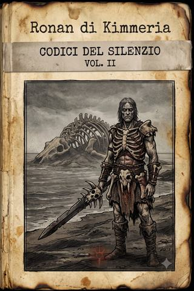

Terre Desolate · codice II
Ronan di Kimmeria
Il codice di un barbaro risorto dall'inferno: come Ronan di Kimmeria tornò dal buio armato di un demone più antico, per cacciare i demoni fino alla bocca dell'inferno.
- ≈ 36 min di lettura
- a cura dell'Archivista
- dalle partite a Apocalisse
- anche in EPUB, 2,4 MB
Nota del Curatore
Codici del Silenzio — il secondo manoscritto
Questo codice l’ho trovato dove il suo autore aveva promesso di lasciarlo: in una cavità, protetto dal legno di un albero malato, a mezza giornata di marcia dai margini del regno della fame. Non era solo. Accanto, in una mano diversa e più stanca, giacevano le ultime pagine di un altro diarista — quello che i lettori di questa collana conoscono già, e conosceranno meglio: colui che chiamo l’Appestato. I due manoscritti erano vicini, ma non sono lo stesso libro, e non li ho voluti cucire insieme. Chi scrive qui non ha mai conosciuto l’altro. È giusto che restino, come furono, due voci che il caso ha posato l’una accanto all’altra, senza mai farle incontrare.
La mano è dura, incisa più che scritta, di uno che — lo dice lui stesso — regge meglio la lama della penna. Si firma Ronan di Kimmeria. Racconta d’essere morto una volta, e d’essere tornato: sta al lettore decidere quanto crederci. Io mi limito a ordinare le pagine, non a migliorarle. Dove il codice si interrompe, l’ho lasciato interrompersi. Dove nomina cose che non poteva sapere, tace — e questo, in un testimone, è la più rara delle onestà.
Ho reso in nostra lingua i nomi della sua terra perduta e ho lasciato in ombra, come lui, il solo nome che si rifiuta di scrivere. Ciascuno capirà perché, leggendo.
Indice
Un solo codice, di una sola voce.
- Ronan di Kimmeria: la lama di zanne (dopo il silenzio — dalle steppe oltre il mare di Anatolia alla bocca dell’inferno) — Come un barbaro caduto in battaglia risorse dal buio per mano di colui che tiene le chiavi, si armò del cadavere di un titano, e portò la sua guerra ai demoni fin dentro il regno della fame.
Linea temporale
Gli anni si contano «dopo il silenzio» (d.s.), dall’apertura dei sigilli e dalle trombe del giudizio. Nel codice di Ronan le date non compaiono: nessuno, laggiù, tiene più un calendario. Resta la sequenza dei luoghi.
- Prima del silenzio — Ronan cade in battaglia contro gli hattici, nelle steppe oltre il mare di Anatolia.
- Il buio — la prigionia in Arallu; Abbadon spezza le catene di uomini e demoni e li riversa sulla terra.
- ~20 d.s. — la riva del mare morto e il cadavere del titano: Ronan si arma e diventa cacciatore di demoni.
- ~20 d.s. — la steppa di Conquista: incontra la compagnia, il marchio di Abbadon lo vincola alla ricerca della corona.
- ~20 d.s. — la bocca dell’inferno, il regno di Carestia: il lago dei famelici, la sala della conversione. Qui il codice si interrompe.
Ronan di Kimmeria: la lama di zanne
Sono morto una volta. Lo scrivo qui in principio, perché chi trova queste pagine sappia con che voce ha a che fare. Non con quella di un uomo. Con quella di ciò che è tornato.
Scrivo di rado, perché l’inchiostro è più raro dell’oro e la mano che regge la lama non è fatta per reggere la penna. Ma ho imparato una cosa, di là dal buio, e voglio che resti quando io sarò di nuovo terra: i demoni mentono. Qualunque forma prendano — l’ala, la voce dolce, il sacerdote che ti offre il pane — mentono. Ogni bambino della mia steppa lo sapeva. Gli uomini civili l’hanno dimenticato, e per questo il mondo è finito.
Io non l’ho dimenticato. È l’unica cosa che ho riportato indietro, con le armi e con l’odio.
Kimmeria
Ronan di Kimmeria era il mio nome, un tempo, oltre le ombre di quella che gli uomini del sud chiamavano Civiltà, e pronunciavano come se fosse una benedizione. Per me non ha mai voluto dire niente, la Civiltà, se non prede più molli e mura più alte.
Non so chi fosse mio padre. So che mia madre andava dietro all’orda — una di quelle donne che seguono gli eserciti come le mosche seguono il bestiame, per lo stesso motivo e con lo stesso destino. In quegli anni l’orda devastava le terre secche a oriente del grande mare interno, e io ci nacqui dentro, nel fango di un accampamento, senza casato perché non avevo casa e senza dèi perché l’unico che ci fosse permesso pregare era la guerra, che almeno rispondeva. Il mio solo padre è stato l’esercito. Mia madre, quella vera, la guerra.1
Crebbi come cresce ciò che sopravvive in un posto simile: in fretta, e storto. Prima sguattero, a lustrare pentole e schivare calci; poi, quando le braccia ressero una lama, soldato; e infine — lo scrivo senza vanto e senza vergogna, ché sono lussi di chi ha avuto una scelta, e io non l’ho avuta — uno dei più efferati dell’orda. Non risparmiai mai nessuno. All’inizio per calcolo: un nemico risparmiato torna, una bocca risparmiata ti maledice. Poi la crudeltà venne da sé, come il callo sulla mano che stringe troppo a lungo lo stesso ferro. Feci cose, in quegli anni, che non racconto — non perché mi pesino, ché non ho più il peso per pesarle, ma perché non servono a chi legge, e questi fogli devono servire.
Sapevo tre cose, allora, e mi bastavano. Sapevo che il ferro va tenuto pulito e la parola corta. Sapevo che la pietà è una zavorra che ti fa arrivare secondo. E credevo di sapere che i demoni mentono — lo ripetevano le vecchie attorno ai fuochi — ma era un sapere di seconda mano, di quelli che reciti senza capirli. Lo avrei capito dopo, di là dalla morte, alla scuola giusta.
Morii prima dei trent’anni, e non in una battaglia da cantare. Morii per mano di un folle, un bastardo violento quanto me, più giovane e più affamato: perché è così che finiscono quelli come me, non sotto la lama di un eroe, ma sotto quella di un altro se stesso. Ci si ammazza tra pari, alla fine. È la sola giustizia che la steppa conosca, e anche quella arriva per caso.
Non ebbi paura. Non per coraggio: perché non avevo mai pensato che ci fosse un dopo. Chi non si aspetta niente non teme niente.
Mi sbagliavo. Un dopo c’era. E per uno come me aveva un nome preciso.
La fine, dopotutto, è un lusso; e i lussi, per uno come me, non ci sono mai stati.
Arallu
Poi ricordo solo il buio.
Chi non c’è stato crede che la morte sia sonno, o fuoco, o un tribunale. Non è niente di tutto questo. È un luogo, con le sue regole, e per uno come me le regole erano familiari.
Gli uomini del sud avevano un nome per quel luogo, l’ho imparato dopo, da un vecchio stregone che tremava a dirlo. Lo chiamavano Arallu.2 Io, a lungo, lo chiamai in un altro modo, ed è la cosa peggiore che io abbia da confessare, peggiore di tutto ciò che feci da vivo: lo chiamai casa.
Perché laggiù non fui punito. Fui riconosciuto. I demoni che avrebbero dovuto tormentarmi si accorsero presto che il dolore non mi spaventava — ne avevo dato troppo per temerlo — e da carcerieri divennero qualcosa che somigliava a compagni. Il loro mestiere lo facevano, con diligenza; ma ogni tanto mi lasciavano sfogare, mi consegnavano gli altri dannati, i molli, quelli che piangevano, e stavano a guardare cosa sapevo inventare. La mia fantasia li divertiva. Ridevamo insieme, io e i diavoli, sopra le cose che facevo. Per la prima volta da quando ero nato, mi sentii tra i miei.
Non so quanto durò. Là il tempo non si conta, perché non cambia niente, e ciò che non cambia non ha bisogno di ore. Sarei rimasto per sempre, credo, contento come un cane nel suo brago, a servire i demoni credendoli amici — fin quando…
Fin quando venne la luce.
Non fu un’alba. Le albe le avevo dimenticate. Fu come il bagliore che si vede all’imboccatura di una caverna quando si risale da sotto la terra: piccolo, lontano, e per questo insopportabile, perché il buio ti aveva convinto che non ci fosse più un fuori.
Nel bagliore, un demone alato.
L’ho visto, e vederlo mi cambiò più delle catene. Era immenso e non era feroce; era peggio. Aveva lo sguardo vacuo, gli occhi di chi guarda oltre te una cosa che tu non vedrai mai, e per la quale tu non conti niente. Non ci guardava con odio. L’odio l’avrei capito, l’odio era la mia lingua. Ci guardava come si guarda una serratura prima di aprirla.
Disse una cosa sola. Il suo nome.
Non lo scrivo. Non perché non lo ricordi — lo ricordo come si ricorda una bruciatura — ma perché scriverlo è chiamarlo, e non voglio chiamarlo, e nemmeno tu che leggi lo vuoi, credimi. Ti basti sapere che è colui che tiene le chiavi. Fu lui ad aprire le porte, di sotto e di sopra, e a rovesciare l’inferno sulla terra. Le trombe che gli uomini piansero le suonò lui, o le fece suonare; è lo stesso.
Disse il suo nome, e spezzò le catene.
Tutte. Non le mie soltanto. Le catene di tutti: uomini e demoni insieme, i dannati e i loro carcerieri nello stesso gesto, come chi apre una diga senza guardare cosa c’è a valle. E ci riversò fuori.
Capii solo dopo perché lo aveva fatto, e non del tutto: un carceriere che libera i suoi prigionieri non lo fa per pietà. Lo fa perché gli servono fuori. Ma questo lo capii dopo. In quel momento pensai una cosa sola, la più stupida e la più viva: sono libero.
E prima ancora, uscendo, capii la lezione che mi ha fatto ciò che sono. Mi voltai a cercarli — i diavoli con cui avevo riso per secoli, i soli compagni che avessi mai avuto — e loro mi guardarono andarmene senza un cenno, senza un saluto, con la stessa indifferenza con cui avevano guardato le mie crudeltà. Non un rimpianto. Niente. E in quel niente intesi, di colpo, ciò che le vecchie ripetevano e che io recitavo senza capirlo: i demoni mentono. Non con le minacce o le lusinghe — quelle le vede anche uno sciocco. La menzogna più grande che mi avessero detto era stata l’amicizia. Non ero mai stato un compagno: ero stato un uso, un passatempo finché servivo dentro e un coltello in più da scagliare fuori. Un demone non ha amici; ha strumenti che ridono. Da quel giorno quelle tre parole sono la mia sola preghiera, e le credo davvero, perché me le insegnò chi sa mentire meglio di tutti, il giorno in cui smise di ridere con me.
Non ero libero. Ero uscito. È diverso, e mi ci vollero anni per imparare la differenza — la porto marchiata addosso, e a suo tempo dirò dove.
Il titano
Uscimmo, e cominciò una nuova carneficina.
Durò giorni. Non li contai neanche quelli, ma erano giorni veri, con un sopra e un sotto, con qualcosa che somigliava alla luce. Chi era uscito con me — gli uomini, dico, perché i demoni presero altre strade, verso i loro padroni — non aveva più niente di umano se non la fame. Saccheggiammo per prendere quel che serviva a fuggire: cibo che non c’era, acqua che bruciava, ferro. Ci uccidemmo tra noi per un otre. Io uccisi più di quanti ne avessi uccisi in vita, e per la prima volta con poco gusto, perché in vita uccidevo per l’orda, o per il puro piacere di farlo, e adesso uccidevo solo per proseguire, e non è la stessa cosa. Il primo è mestiere, o vizio. Il secondo è soltanto continuare a non fermarsi.
Andai a sud, verso dove finiva la terra, senza una ragione migliore del fatto che le gambe volevano andare — e le gambe, quando la testa non ha più mete, portano verso l’acqua, come tutto ciò che è vivo. Non avevo una casa a cui tornare. Non l’avevo mai avuta. Camminai lo stesso, perché fermarsi, per uno come me, è già un modo di morire una seconda volta.
Giunsi al mare, e il mare era morto.
Non era un mare che avessi mai visto — non sono mai stato uomo di coste, io, ma di steppa e di fango — eppure lo riconobbi per ciò che avrebbe dovuto essere, e non era, ed è la sensazione peggiore che ci sia. Acqua a perdita d’occhio, ma putrida, amara, coperta di una schiuma che non era schiuma; e non un vascello, non una vela, non un relitto. Solo il silenzio, e sotto il silenzio qualcosa che si muoveva e che era meglio non guardare.
Fu lì che capii, davvero, che il mondo di prima non c’era più. Non me l’aveva detto Arallu. Me lo disse il mare morto, che è più onesto di qualunque demone.
E fu lì, sulla riva morta, che trovai il titano.
Giaceva mezzo sepolto nella sabbia nera, e da lontano lo presi per una collina. Da vicino era un cadavere. Una creatura nata dalla terra stessa, prima degli uomini e forse prima degli dèi, grande come una delle nostre navi messe in piedi, con ossa che erano travi e una pelle che il tempo aveva conciato in cuoio. Non so cosa l’avesse ucciso. So che era la cosa più antica che avessi mai toccato, e che toccandola sentii, per la prima volta da quando ero uscito dal buio, qualcosa che non era né odio né fame.
Sentii un pensiero. E il pensiero fu: con questo si combatte.
Restai giorni presso il titano. Mangiai di lui — non me ne vergogno, la carne antica non marcisce come la nostra — e con lui mi armai. Le sue ossa erano più dure di qualunque ferro forgiato da mani d’uomo, e la sua magia, la magia vecchia della terra, mordeva dove il ferro scivola. Perché una cosa l’avevo imparata in Arallu, a mie spese: la carne dei demoni il ferro non la ferisce. Ci passa attraverso come attraverso il fumo, e loro ridono. Ma l’osso del titano no. L’osso del titano ricorda un tempo in cui i demoni non c’erano ancora, e li odia di un odio più vecchio del mio.
Dai suoi tendini spessi feci una frombola. Dai suoi tessuti e da un osso lungo feci un arco. Dalle costole, tagliate e affilate, feci le frecce, e dalla cotenna un pettorale che nessuna zanna ha mai passato.
E dal cranio — dalle zanne curve che gli armavano le fauci, e dall’osso della fronte — forgiai la lama.
La chiamo così, semplicemente, la lama, perché non merita un nome di canto: i nomi si danno alle spade degli uomini, e questa non è degli uomini. È zanne e osso, lunga quanto il mio braccio e mezzo, e non brilla, perché l’osso non brilla. Ma quando la calo su un demone, il demone non ride. È l’unica risposta che io abbia mai avuto alle risate di Arallu, e mi basta.3
Così tornai al mondo: risorto da un demone, armato di un demone più vecchio, per uccidere i demoni.
Non mi sfugge l’ironia. Un uomo del sud, uno di quelli che ho imparato a conoscere dopo, ci avrebbe fatto sopra un discorso, forse una preghiera. Io non prego più nemmeno la guerra, il solo dio che abbia avuto: se un dio ci fosse, il mare non sarebbe morto. Constato soltanto, come si constata una ferita guardandola: sono lo strumento di ciò che odio. Colui che tiene le chiavi mi ha spezzato le catene perché gli servivo fuori, e io gli servo ancora, anche adesso che scrivo, anche adesso che credo di andare dove voglio io.
Ma questo viene dopo. Prima venne la steppa.
La steppa deserta era congeniale al mio passo. Erba secca e ossa, orizzonti in cui un uomo solo è un puntino e un puntino non lo caccia nessuno. Imparai presto le prede nuove di quel mondo nuovo: i demoni centauro, che i savi chiamano figli della Conquista, metà uomo e metà bestia da tiro, alti e superbi. Superbi, sì — ed è la superbia a ucciderli, perché non guardano mai a terra, e mai sotto. Io stavo a terra. Io stavo sotto. Li scorgevo prima che loro scorgessero me, e cadevano come grano innanzi alla mia lama, senza sapere da dove.
Vivevo di questo, e sarei vissuto così fino a cadere di nuovo, e stavolta per sempre, se una sera, contro il vento, non avessi sentito un odore che in quel mondo non sentivo da tempo.
Non era odore di demone. Era odore di uomini vivi. E — cosa più rara dell’oro, più rara dell’inchiostro — odore di cibo fresco.
Cacciatore
Li seguii controvento per mezza giornata prima di lasciarmi vedere. È regola di caccia: prima conosci la preda, poi ti mostri. Solo che questa non era preda. Erano uomini, sette o otto, carichi di stracci e di ferraglia, che attraversavano la steppa come attraversa un cieco: tastando, sbagliando, fidandosi del rumore. In quel mondo, muoversi così è morire. Che fossero ancora vivi voleva dire una di due cose: che erano fortunati, o che erano pericolosi. Di solito è la seconda.
Li annusai a lungo, dall’erba, con la pazienza che ho imparato dal titano — un morto sa aspettare, e io per metà lo sono. Non puzzavano di demone. Questo lo dico perché conta più di tutto il resto: un uomo puzza di sudore e di paura, un demone puzza di zolfo dolce e di menzogna, e io il secondo odore lo sento a un tiro di freccia. Loro no. Erano solo uomini, sporchi e stanchi, e avevano cibo che non era carne di titano né lucertola cruda.
Mi mostrai. Si spaventarono, come dovevano, perché un uomo coperto di ossa che esce dall’erba secca non è cosa che rassicura. Uno di loro imbracciò un arco — un’arciera, dagli occhi tagliati come non ne avevo mai visti a Kimmeria — e un altro sollevò le mani, e dalle mani gli uscì un freddo che sentii sulla pelle a dieci passi. Un mago. Ce n’è sempre uno.
Non li attaccai. Dissi quello che c’era da dire, che nella steppa vale più di ogni cortesia: conosco la strada, voi avete il cibo. Vi guido finché mi nutrite. Fu il vecchio a rispondere.
Non con un sì. Con una domanda: e come sappiamo che vali il pane? Domanda giusta. Nella steppa il pane non si dà per le parole. Risposi che quella notte stessa l’avrebbero visto, e non spiegai altro, perché avevo già sentito, sottovento, quello che loro non sentivano ancora: uno zoccolo pesante che ci seguiva da mezza giornata, tenendosi a distanza, con la pazienza dei predatori superbi.
Venne col buio, come vengono loro.
Un demone centauro, dei figli di Conquista, alto il doppio di un uomo, con le braccia da fabbro e il petto da cavallo, e negli occhi quella luce arrogante che scambiano per coraggio. Ci girava intorno al fuoco a rispettosa distanza, studiando quale dei molli avrebbe preso per primo. Non guardava a terra. Non guardano mai a terra: è sotto la loro dignità, e la dignità, per uno di quelli, vale più della vita — così gliela feci pagare al prezzo che aveva scelto.
Ero già nell’erba, da prima che gli altri si accorgessero di lui. Lo lasciai avvicinare, lasciai che scegliesse la ragazza dall’occhio da mercato come preda — la scelse, e fu l’ultima scelta libera che fece — e quando abbassò le braccia per ghermirla gli venni da sotto, dal basso, dove non guardava, e la lama di zanne trovò il punto in cui l’uomo si fa cavallo. Non c’è armatura, lì. Non c’è dignità che tenga. Cadde in due tempi, come cadono i grossi: prima le ginocchia, poi tutto il resto, e nel cadere fece più rumore lui di tutta la battaglia.
Nessuno parlò. L’arciera aveva la freccia ancora incoccata, e non l’aveva scoccata: non ce n’era stato il tempo. Il mago mi guardava con la faccia di chi rifà un conto che gli tornava sbagliato. Il vecchio profeta sorrise — quel sorriso storto che avrei imparato a diffidare — e disse: «Vale il pane.»
Mangiai. Era la prima carne non di titano e non di lucertola da più lune di quante ne ricordassi. E mentre mangiavo li guardai, uno per uno, e cominciai — solo cominciai — a distinguerli.
Il vecchio lo chiamavano il profeta, e imparai presto perché.
Era secco come un ramo bruciato, con occhi che non stavano mai sulla cosa che guardavano, ma sempre un palmo oltre — come gli occhi del demone alato, mi accorsi, e la somiglianza non mi piacque. Parlava troppo. Gli uomini che parlano troppo, nella mia terra, li chiamavamo tamburi vuoti: fanno rumore perché dentro non c’è niente. Ma questo, ogni tanto, chiudeva gli occhi e diceva cose, e le cose che diceva accadevano. Non subito. Non tutte. Abbastanza perché gli altri lo temessero e lo seguissero, il che è la stessa cosa.
Lo vidi la prima sera fare quello che avrei imparato a odiare. Ci passò accanto un demone — uno solo, uno di quelli piccoli che strisciano nel buio ai margini dei fuochi, spie dei loro padroni — e mentre io già tendevo la lama il vecchio alzò una mano. Non per colpire. Per parlare. Aprì la bocca e disse alla creatura parole dolci, come si parla a un cane che si vuole ammansire.
Lo tranciai prima che finisse la frase. Il demone, dico, non il vecchio; il vecchio lo lasciai vivo, e ancora non so se feci bene.4
Mi guardò male, il profeta, come si guarda chi ti rovina un affare. «Potevo cavarne qualcosa», disse. «Sapeva delle strade.»
«I demoni mentono», risposi. Era la prima volta che glielo dicevo. Non fu l’ultima. Diventò, fra noi, quasi un saluto: lui tendeva la mano a una creatura infera, io la tagliavo, lui si lamentava, io dicevo le tre parole. Un uomo civile ci avrebbe visto un dissidio. Io ci vedevo una cura che non attecchiva.
Gli altri li guardai appena. C’era il mago dalle mani fredde, che gli altri chiamavano con un nome di città lontana, Ur, e che aveva l’aria di chi ha letto troppo e dormito poco. C’era l’arciera. C’era una ragazza che rideva a sproposito e guardava me e gli uomini con un occhio solo, quello del mercato. C’era un uomo con una croce sul petto e la faccia di chi cerca una cosa che ha perso. Non imparai i loro nomi, non subito. Nella steppa i nomi si danno a chi sopravvive alla seconda luna. Prima è spreco di fiato.
La maledizione
Fu la terza notte che tornò.
Lo sentii prima di vederlo, come si sente il gelo prima del vento: il marchio. Non ho ancora detto dove lo porto, e non lo dirò, perché è cosa mia; basti che colui che tiene le chiavi, quando mi spezzò le catene, non mi liberò — mi cambiò padrone. Uscire da Arallu ha un prezzo, e il prezzo lo paga chi esce, per sempre. Quella notte il prezzo venne a riscuotere.
Comparve fra i fuochi come compare un pensiero cattivo: senza passi. Lo stesso sguardo vacuo, la stessa ala. Gli altri caddero in ginocchio — tutti tranne me, che in ginocchio non ci vado più da quando ho visto cosa c’è in fondo, e tranne il vecchio profeta, che invece si fece avanti, gli occhi accesi, come un innamorato. Mi si rivoltò lo stomaco. Un uomo che sorride a quella cosa non ha capito niente, o ha capito tutto e ha scelto la parte sbagliata.
Non parlò a loro. Parlò a me, e non con la bocca. Mi mise nel sangue un ordine, come si mette una brace in un otre d’acqua: dovevo portargli una corona. Non una corona d’oro — questo lo capii dal peso della cosa nel sangue — ma un oggetto vecchio quanto il titano, un pezzo di qualcosa di più grande, che si trovava nelle mani di Carestia, il cavaliere della fame, laggiù verso la bocca dell’inferno. Portagliela, diceva il marchio, e forse ti libererò. Non portarla, e morirai come muore chi si sottrae: dall’interno, lentamente, sapendo.
Poi non ci fu più. E il profeta aprì gli occhi e disse alla compagnia esattamente quello che il marchio aveva detto a me — la corona, Carestia, la bocca dell’inferno — perché anche lui l’aveva vista, nelle sue visioni sanguinanti. Capii allora che eravamo legati, io e quella gente, dallo stesso guinzaglio, e che il guinzaglio lo teneva in mano un demone.
Fui per andarmene lo stesso.
Un uomo della mia terra non serve i demoni; li uccide, o muore provandoci, e la seconda è comunque più pulita della prima. Lo dissi. Dissi che preferivo marcire dall’interno sapendo di non aver piegato la testa, piuttosto che portare una corona a colui che aveva ucciso il mio mondo.
Fu il mago di Ur a fermarmi, e lo fece con l’unica cosa che mi ferma: la ragione fredda. «Marcire dall’interno», disse, «non è morire in battaglia. È morire in mesi, e negli ultimi non reggerai più la lama. Il demone lo sa. Ti ha lasciato la scelta perché sa che non è una scelta.» Aveva ragione, e odiarlo per questo non serviva a niente, così non lo odiai. Constatai soltanto che ero, ancora una volta, uno strumento — e che l’unico modo di spezzare uno strumento è usarlo fino a romperlo. Se andavo verso Carestia, prima o poi sarei arrivato a portata di lama del cavaliere che mi aveva tolto tutto. E una corona la si consegna, o la si usa per aprire la testa a chi te l’ha chiesta. Avrei deciso a mani vuote, davanti a lui.
Andammo verso la bocca dell’inferno.
Ci perdemmo, naturalmente. È facile perdersi nel deserto di Conquista: è tutto uguale, cenere e ossa, e il cavaliere bianco lo vuole così, perché chi si perde è più facile da razziare. Fu la fame a salvarci, il che ha una sua giustizia amara, visto dove eravamo diretti.
Incontrammo altri pazzi — li chiamo così perché cercavano Carestia di loro volontà, «per aver salva la vita», come se dalla fame ci si salvasse offrendosi alla fame. Tre li guidavano: uno straniero dell’ovest, Petronius, di quelli che parlano bene e combattono a metà; e due Kithani, un uomo e una donna. La donna si faceva chiamare Hong Chi Minh, l’energumeno Cho Hon Minkion. Nelle storie della mia gente i Kithani erano popolo decadente e sottile, tutto seta e veleni; questi erano solo affamati come noi, e questo mi disse più di ogni racconto quanto in basso fosse caduto il mondo.
Ci accolsero perché insieme abbattemmo una grossa lucertola delle sabbie, e per una notte fummo tutti solo uomini attorno a un pasto caldo, il che è raro e vale più di quanto sembri. La ragazza dall’occhio da mercato provò con la coppia dell’ovest e ne fu respinta, poi sparì soddisfatta con l’energumeno Kithani, e io pensai che perfino alla fine del mondo la gente trova il tempo per le cose piccole, e non seppi dire se fosse miseria o coraggio. Forse le due cose, alla fine, sono parenti.
Al mattino i Kithani ci mostrarono la via per il lago, e se ne andarono. Non li ho più visti. Nel mondo dopo il silenzio, chi ti guida per un tratto e poi svanisce è la forma più onesta di amicizia: non promette di restare.
Il lago dei famelici
Il lago non era acqua. O forse lo era stata, un tempo; adesso era una piaga di melma, e attorno alla piaga, i famelici.
Non trovo parola migliore. Erano stati uomini. Ora strisciavano — vecchi, donne, bambini, tutti resi uguali dalla stessa fame, ridotti a vermi che si trascinano per un tozzo di pane distribuito da un sacerdote. Il sacerdote era grasso. Lo scrivo perché mi colpì: in tutto quel deserto di ossa, un uomo grasso, e attorno a lui la fame fatta popolo. Così riconosci un servo di Carestia dai suoi preti: sono gli unici sazi.
Ci accolse con parole di miele, che avevo già sentito in bocca al serpente — no, quello lo sentirono altri, prima di me, in un altro luogo; io lo seppi dopo, e non importa. Offrì protezione, salvezza, pane, a chiunque giurasse fedeltà al cavaliere. E oltre la pozza si vedeva cosa fosse quella salvezza: i suoi fedeli più antichi, che non avevano più forma d’uomo, e avevano ancora fame. Fame che il pane non tocca, che la morte non placa. Adorare Carestia significa questo: non essere mai più pieni, per sempre. Nemmeno da morti.
E il profeta, che gli dèi lo maledicano, sembrava tentato. Lui e il mago di Ur si guardarono, e nei loro occhi lessi la stessa cosa: forse conviene fingere. Forse. Ma io i preti li conosco, di ogni cielo e di ogni inferno, e so che nessuno di loro dà pane senza chiedere sangue.
Questo chiese: due dei nostri. In sacrificio. Il suo dio famelico voleva la vita di due compagni, scelti da lui — l’arciera dal bastone che tuona,5 e il predicatore di sventure, il chierico del gruppo, che non era l’uomo con la croce ma un altro, uno che borbottava rovine a mezza voce come se le leggesse su un cielo che solo lui vedeva. Non ho mai capito perché i preti e gli sciamani, di qualunque parte, siano così pronti a scannarsi tra loro sull’altare. Forse perché sono gli unici a credere davvero che il sangue serva a qualcosa.
Non aspettai la risposta della compagnia. Certe risposte è meglio darle con la lama, prima che qualcuno le dia con la lingua.
Mi gettai avanti.
Squartai i suoi famelici come si squarta l’erba alta per aprirsi un sentiero: senza odio, quasi senza guardarli, perché odiarli sarebbe stato come odiare la carestia stessa, e la carestia non ha faccia da odiare. Mi feci strada verso il grasso, e la lama di zanne cantava — cantava, dico, quella nota bassa che fa l’osso quando trova carne dannata — e già lo vedevo aperto in due.
Ma il grasso aveva la sua magia, quella vile dei preti. A ogni mio colpo mortale, uno dei suoi affamati si buttava in mezzo e prendeva il ferro al posto suo. Cadevano, e lui rideva dietro il muro dei loro corpi. Un altro si sarebbe scoraggiato. Io no: ciò che sanguina può morire, e tutti loro sanguinavano. È la sola teologia che mi serve. Continuai a tagliare, e il muro si assottigliava, un corpo dopo l’altro, finché non restammo io e lui, e i suoi fedeli lontani, dall’altra parte della pozza, troppo lenti per salvarlo.
Allora implorò. Come implorano tutti, quando finisce la magia e comincia il ferro. Promise di rivelare dove fosse un altro, più grande di lui — «il sacerdote scarlatto», disse, quello che il profeta aveva visto nelle sue visioni, vicino al cuore del regno. Alzai la lama.
E il mago di Ur mi fermò la mano.
«Ci serve», disse. «Vivo, sa la strada. Morto, è solo un altro grasso in mezzo alla melma.»
Ragione fredda, di nuovo. E di nuovo aveva ragione, e di nuovo la ragione era la cosa sbagliata. Glielo dissi, e lo scrivo qui perché resti, che qualcuno un giorno sappia che l’avevo detto: verrà il giorno in cui vi pentirete di non avermi dato ascolto, e di non aver decapitato quell’essere quando la lama era già alta. I preti risparmiati tornano. Tornano sempre. È l’unica promessa che mantengono.
Abbassai la lama. Non per obbedienza — non obbedisco ai maghi più che ai demoni — ma perché tra il mio giudizio e la corona di Carestia c’era ancora troppa strada, e in quella strada mi serviva la testa fredda del mago più della mia rabbia calda. Constatai. È quello che faccio, invece di piegarmi: constato, e aspetto.
Il grasso ci indicò un passaggio sotto il suo trono di legno e rame. Una caverna. Da sotto veniva il rumore di un fiume, e il rumore d’acqua, laggiù, è più prezioso di qualunque promessa. Scendemmo.
Ci aspettava, sulla soglia del buio, un cane a tre teste. Progenie d’inferno — di quelle che conosco, di quelle che il ferro non ferisce. Il profeta, che non impara mai, aprì la bocca per parlargli.
Stavolta non feci in tempo a dire le tre parole. Le disse la lama per me. L’osso del titano trovò la carne immonda e la aprì, e le tre teste caddero, e la creatura non rise. Non ridono mai, sotto la mia lama. È l’unica preghiera che mi sia mai stata esaudita.
Oltre il cane morto, il rumore che avevo sentito era vero: un fiume, sotto la terra, nero e freddo, ma pulito. Bevemmo. Lo scrivo perché conta: in tutto quel budello della fame, dove ogni cosa era veleno o esca, un filo d’acqua che non uccideva. Bevvero anche i famelici, dico i nostri, gli uomini della compagnia, e per un momento nessuno parlò e nessuno mentì e nessuno pregò, e fu la cosa più simile alla pace che vidi in quel viaggio. Poi ci alzammo, perché la pace, dopo il silenzio, dura quanto un sorso, e ci addentrammo dove l’acqua non arrivava.
La sala della conversione
Sotto era tutto ragnatele.
Pendevano dalla volta come vele marce, e dentro le vele c’erano bozzoli, e i bozzoli non erano vuoti. Ne aprii uno con la lama, per stupidità o per rabbia, non ricordo, e ne colò fuori il cadavere di un infante, nero e gonfio di putredine. C’è un limite anche per uno come me, che ha visto Arallu. Diedi fuoco alla tela. Bruciò con un fumo denso e acre che ci prese alla gola e ci costrinse a soffocarlo in fretta, o saremmo morti noi al posto dei morti. Imparai la lezione: nel regno della fame, anche il fuoco ha fame, e mangia chi lo accende.
Il profeta trovò un passaggio stretto oltre le tele. I loro tessitori — ragni grossi come cani, crudeli e deboli — caddero sotto la mia lama e sotto i colpi di un altro della compagnia, un uomo taciturno segnato di sigilli di metallo,6 che combatteva come chi prega e pregava come chi combatte. Andammo avanti, e trovammo altri servi del cavaliere: non ancora famelici, non ancora informi, ma già condannati dalla loro debole voglia di vivere. Il profeta e il mago li convinsero con parole e con inganni che eravamo dei loro, ansiosi di unirci ai ranghi. Ci indicarono la via per un ministro più grande, un «santo» che chiamavano Arpad, nella sala della conversione.
Li lasciai vivere. Non per pietà — la pietà l’ho consumata in Arallu, come l’olio di una lampada — ma perché la lama, a quel punto, la volevo tutta per Arpad.
La sala della conversione era una bolgia.
Su un trono di sassi e pietrisco sedeva Arpad, un altro grasso, fratello di teologia di quello del lago. Attorno, i suoi supplicanti — poveri diavoli venuti a barattare l’anima per un pasto — e una schiera di famelici, e due guardie con mazze chiodate, barbari grossi e vuoti.
Entrammo con l’inganno. Il profeta si camuffò con la stregoneria: prese la faccia del grasso del lago, quel Wolfgang che il mago aveva voluto risparmiare — e qui, che gli dèi mi perdonino, dovetti ammettere che il mago aveva avuto ragione anche in questo, perché fu proprio la faccia risparmiata ad aprirci la sala. Un prete conosce un altro prete. La menzogna resse quanto basta a spezzare la cerimonia e a disperdere i supplicanti, che è tutto ciò che chiedevo: che i deboli togliessero il disturbo, e restassero solo quelli che dovevano morire.
Ma prima che cadesse, Arpad mi guardò. Non guardò il finto Wolfgang: guardò me, in fondo alla sala, come il grasso del lago non aveva saputo fare. Ha l’occhio, un prete, per la carne che non è viva. «Tu non sei uno degli affamati», disse, e la voce gli usciva grassa e lenta, unta di certezza. «Tu sei già morto. Lo sento. Ma il mio signore ha fame anche per i morti — è l’unico che possa riempire perfino te. Inginocchiati, e non avrai più bisogno di niente. Mai più.»
Non avere più bisogno di niente. È la promessa che Carestia mette in bocca ai suoi preti, ed è la più astuta di tutte, perché somiglia alla pace e ne è il contrario: chi non ha più bisogno di niente è chi è stato divorato fino all’osso. L’avevo vista, quella pace, strisciare attorno al lago. «Ho conosciuto la fame vera», risposi, «laggiù dove il tuo signore non è mai sceso, perché anche lui ne avrebbe avuto paura. La tua non mi spaventa. E non m’inginocchio: l’ho scritto altrove, non lo rifaccio per un grasso.»
Poi la menzogna cadde, come cadono tutte, e lasciammo parlare le spade. Che si contino i morti.
L’arciera aveva seminato la sala di trappole — non di corde e pali, ma di quel suo potere freddo che ammutolisce i muscoli — e i famelici, indeboliti, caddero come grano innanzi alla mia lama. Cadevano e cadevano, e i miei compagni tenevano le due guardie e il prete, e per un momento pensai che fosse finita presto, il che è sempre il pensiero sbagliato.
Perché dal passaggio ne giunsero altri. I figli della fame non finiscono mai: è il senso stesso della fame. Ne abbattei quanti la lama ne raggiungeva — che gli dèi mi garantiscano vittoria e vendetta, dissi, la vecchia preghiera, e la dissi non agli dèi morti ma alla lama, che è l’unico dio che mi ha mai risposto — ma erano troppi, un muro di bocche, e per la prima volta da quando ero uscito dal buio sentii il braccio farsi pesante.
Fu allora che il mago di Ur fece la sua mossa.
Avvolse tutto il passaggio in un mare di fuoco.
Lo vidi arrivare e pensai: mi ha ucciso. Il mago mi ha ucciso, per errore o per calcolo, e finirò arso in mezzo ai famelici, io che ho attraversato Arallu, bruciato come un ragno nel suo stesso nido. Ero pronto — si è sempre pronti, dopo la seconda morte la prima non spaventa più.
Ma le fiamme mi lambirono e non mi presero. Attorno a me c’era uno scudo, una cupola scintillante che il mago aveva alzato nello stesso gesto con cui appiccava l’incendio, così che il fuoco mangiasse i famelici e risparmiasse me. Bruciarono tutti — loro, e l’altro prete di Carestia che li guidava, che cadde poi sotto i miei colpi quando lo scudo si aprì. Io restai in piedi, illeso, in mezzo alla cenere di cento bocche.
Guardai il mago. Il mago guardò me. Non ci dicemmo niente — non siamo gente da grazie — ma qualcosa cambiò, in quel silenzio. Lo avevo catalogato tra i tamburi vuoti, tra i maghi che hanno letto troppo e combattuto niente. Mi ero sbagliato. Uno che ti avvolge nel fuoco per salvarti, e ha la mano ferma per farlo, non è un tamburo vuoto. È un’arma, come me, solo forgiata in una terra dove leggono. Da quella sala in poi lo chiamai col suo nome. È il massimo onore che io conceda.
I miei compagni intanto avevano abbattuto le due guardie, e Arpad con loro. La sala fu nostra.
Non ebbe pace a lungo.
Da lontano, passi. Altri venivano. Ma il profeta — devo dargliene atto, per quanto mi costi — usò di nuovo la sua stregoneria e prese la forma di uno dei preti morti, tanto somigliante che per poco non lo colpii io stesso. L’inganno resse: i ficcanaso se ne andarono dopo una distribuzione di pane e un rimprovero feroce alla loro poca fede. Un prete che sgrida i fedeli in nome di un dio che non c’è: il profeta era nato per quella parte, e la recitò così bene che mi chiesi, per la prima volta, quanto ci fosse di recita.
Ci fermammo a fiatare, sempre all’erta. Notai una cosa. Una delle sale attorno era guardata da due barbari fanatici che non ne uscivano, come trattenuti da un ordine più alto o da un vincolo sacro. I fanatici, di solito, si buttano. Questi restavano. Restavano perché custodivano qualcosa. Non entrai — non ancora — ma me lo segnai nel sangue, come mi segno le prede: c’è, in quella stanza chiusa, qualcosa che vale una guardia che non combatte. Prima o poi tornerò a vedere cosa vale così tanto da tenere un fanatico fermo.7
Il conto
Riposammo poco. Nel regno della fame non si dorme: si chiudono gli occhi e si aspetta.
Esplorai avanti io, come faccio sempre, perché il buio è la mia steppa e io mi muovo nel buio silenzioso come l’ombra di un’ombra. Il passaggio scendeva ancora. A un certo punto il fuoco stesso della terra affiorava in una fontana di roccia fusa, e nella roccia c’era un’ombra viva, un gigante di fuoco, un demone degli abissi grande come il titano che mi arma. Lo guardai a lungo. Avrei potuto svegliarlo, e forse morire; o passare, e vivere. Passai. Non per prudenza — non è prudenza, la mia — ma perché quel demone non era la mia preda di oggi. Ci sono conti che si saldano, e conti che si segnano per dopo. Quello lo segnai.
Oltre, un altro passaggio. E in fondo al passaggio, una sala piena di giacigli.
Vecchi. Donne. Bambini emaciati, con gli occhi troppo grandi nelle facce troppo piccole. Non famelici — non ancora. Uomini, gli ultimi uomini di quel budello d’inferno, che sopravvivevano non si sa come, stretti gli uni agli altri come si stringe il calore. Fra loro e me, una strana porta.
Mi fermo qui, perché è qui che sono, adesso, mentre scrivo.
La lama è appoggiata al mio ginocchio. Dall’altra parte della porta c’è gente che ha fame e paura, e se mi ostacoleranno cadranno come grano innanzi alla mia lama, perché tra me e la corona di Carestia non lascio niente in piedi. Lo scrivo sapendo com’è. Non è coraggio. È il conto.
E il conto, ora che lo guardo per intero, è questo. Sono morto una volta, e ciò che è tornato caccia i demoni con le armi di un demone più vecchio, risorto per mano di colui che tiene le chiavi, marchiato dal suo marchio, spinto dal suo marchio verso una corona che non voglio, legato a una compagnia guidata da un vecchio che ai demoni ci parla. Combatto l’inferno, e l’inferno mi tiene il guinzaglio. Ho spezzato molte cose in vita mia, e più ancora dopo. Il marchio no. Il marchio è ancora qui, e la corona è ancora davanti.
Ma spezzerò anche quello. Dovessi tentare ogni giorno per i prossimi dieci anni, dovessi arrivare fino alla bocca dell’inferno e guardare in faccia il cavaliere della fame che stringe quella corona, lo spezzerò. Non per un dio — non ne ho mai avuto uno che non fosse la guerra, e la guerra non libera nessuno. Per me, che sono morto e non ho voluto restarci.
Mi chiederai perché scrivo, io che disprezzo i tamburi vuoti e la lingua lunga, io che non ho mai pianto un morto in vita mia. Non scrivo per onorare nessuno: i morti non m’importano, non m’importavano da vivo e non m’importano adesso. Scrivo per una ragione sola. Ho imparato una verità, una soltanto, e impararla mi è costato la morte e l’inferno: i demoni mentono, in ogni forma, anche in quella dell’amico e del salvatore. Lasciarla morire con me sarebbe l’ultima risata dei diavoli alle mie spalle, e quella risata non gliela concedo. Che almeno uno, dopo di me, sappia riconoscere la menzogna quando gli sorride. È tutta l’eredità che uno come me possa lasciare: non un nome, non un canto, ma un avvertimento affilato come la mia lama.
Nascondo queste pagine come nasconde le sue chi ha capito che presto non potrà più scrivere. Se le trovi, straniero, sai ora con che voce hai avuto a che fare. Non con quella di un uomo.
Con quella di ciò che è tornato — e che, prima di tornare terra un’ultima volta, ha aperto quella porta.
Da dove vengono queste storie
Questi codici non sono stati ritrovati fra le rovine. Sono nati attorno a un tavolo, come tutte le storie migliori.
I Codici del Silenzio derivano dalle partite ad Apocalisse — il gioco di ruolo di Acheron ispirato all’Apocalisse di Giovanni (acheron.it/apocalisse) — giocate al Brainstorm Club, associazione di giochi di ruolo e da tavolo di Faenza (RA). Dietro ogni voce di questo libro — il druido divorato dalla piaga che scrive per non far morire la memoria, il barbaro risorto dall’inferno, la veggente accecata dal giorno del giudizio — c’è una persona vera, seduta a un tavolo vero, che una sera ha deciso cosa il suo personaggio avrebbe fatto. Il resto è soltanto trascrizione.
Al Brainstorm Club si gioca da più di trent’anni, e non a un gioco solo: oltre ad Apocalisse, ci si siede a Brancalonia, a Rogue Trader, a Dungeons & Dragons e a molti altri giochi di ruolo. Il gruppo che ha dato vita a questi codici porta avanti le proprie campagne da quasi quindici anni.
Il club accoglie nuovi giocatori da tutta la Romagna, e tiene sessioni dedicate ai più giovani — bambini dai 9 ai 15 anni, ragazzi dai 16 ai 19 — per imparare non soltanto a giocare, ma anche a dirigere il gioco: a costruire mondi e a raccontare storie come queste.
Se una di queste voci vi ha tenuto compagnia, ricordate che è cominciata con un tiro di dado e con qualcuno che, a un tavolo di Faenza, ha detto: «il mio personaggio, invece, fa così».
Brainstorm Club — Faenza (RA)
brainstormclub.it · info@brainstormclub.it
Note
Nell’orda non c’erano dèi con un nome, né templi né preti. Si pregava la guerra, e la guerra è l’unica divinità onesta che io abbia conosciuto: non promette niente, non consola nessuno, e mantiene sempre. Le vecchie dicevano che chi la serve bene lei se lo prende presto. Mi prese a ventinove anni. Puntuale.↩︎
Lo stregone di Ur, di cui dirò, lo pronunciava a mezza voce e si toccava la fronte. Io lo scrivo a voce piena. Un luogo che ho attraversato e da cui sono uscito non ha più diritto al mio timore.↩︎
Zanne e osso di titano. Chi legge e la trova sul mio corpo la prenda, se ne ha il fegato: ferisce ciò che il ferro non ferisce. Ma sappia che l’osso sceglie la mano, come certe spade degli uomini scelgono chi le impugna, e se lo sceglie male pesa come una colpa.↩︎
Chi risparmia un uomo che parla coi demoni risparmia mezzo demone. L’ho lasciato vivere perché mi era utile, e l’utilità è la peggiore delle ragioni: è quella con cui i demoni ti comprano.↩︎
Un bastone che chiama il tuono. Non ne avevo mai visti, nella mia terra; da noi il tuono lo chiamavano solo gli dèi, e non veniva quasi mai. Lei lo chiama e viene. Il mondo nuovo ha stregoneria in mano a chiunque; è uno dei modi in cui riconosco che non è più il mio.↩︎
Portava sigilli di metallo conficcati nella carne, sette, e non ne spiegò mai il senso. Combatteva bene. Nel mondo dopo il silenzio non si chiede a un uomo perché è segnato: lo siamo tutti, ciascuno a suo modo.↩︎
Me lo sono segnato, e non ci sono tornato. Chi legge sappia che c’era, dietro quella porta guardata, qualcosa che valeva un fanatico immobile — e che io, andando alla corona, l’ho lasciato lì. Non tutti i conti si saldano. Alcuni si ereditano.↩︎
Preferisci leggerlo nel tuo lettore, o portartelo offline?
⤓ EPUB 2,4 MB